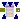
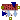

Physiolibrary.Osmotic.Components.IdealOverflowFiltration
Physiolibrary.Osmotic.Components.IdealOverflowFiltration
Extends from Modelica.Icons.Package (Icon for standard packages).
| Name | Description |
|---|---|
| OsmoticCell | Solvent container |
|  Membrane | Solvent diffusion through semipermeable membrane |
| SolventFlux | Prescripted solvent flow |
| IdealOverflowFiltration | Semipermeable membrane filtration (e.g. flux through capillary membrane) of overflowing solution (e.g. blood microcirculation) |
|  Reabsorption | Divide inflow to outflow and reabsorption |
Solvent container
The liquid volume of the penetrating solution is accumulated in "OsmoticCell", where the nonpenetrating solutes are held. Instances of this class can represent both sides of the membrane, for example intracellular space, extracellular space, interstitial space, blood plasma or cerebrospinal fluid.
Extends from Icons.OsmoticCell, SteadyStates.Interfaces.SteadyState (Abstract class for any dynamic state calculation (for any derivation), which is driven by SimulationType option.).
| Name | Description |
|---|---|
| NumberOfMembraneTypes | Membrane type is determined by membrane permeabilities for substances. |
| ImpermeableSolutes[NumberOfMembraneTypes] | Amount of impermeable substance if useImpermeableSolutesInput=false [mol] |
| Initialization | |
| volume_start | Initial volume of compartment [m3] |
| External inputs/outputs | |
| useImpermeableSolutesInput | =true, if impermeable substance amount as an input |
| IO | |
| Functions to read or store | |
| replaceable package Utilities | |
| Initialization | |
| state_start | State start or init value |
| Value I/O | |
| storeUnit | Unit in Utilities input/output function |
| stateName | Name in Utilities input/output function |
| LOAD_STARTS | Load start value of state |
| SAVE_RESULTS | Save final state values |
| SAVE_COMPARISON | Compare final state values with original values |
| Equilibrium | |
| Simulation | |
| Simulation | Dynamic with Initialization or Steady State |
| isDependent | =true, If zero flow is propagated in eqiulibrium through resistors, impedances, reactions, etc. |
| Name | Description |
|---|---|
| q_in[NumberOfMembraneTypes] | Flux to/from osmotic compartment |
| impermeableSolutes[NumberOfMembraneTypes] | Amount of impermeable solutes in compartment [mol] |
| volume | Actual volume of compartment [m3] |
Solvent diffusion through semipermeable membrane
The main element of osmotic phenomena is a semipermeable membrane, which generates the flow of penetrating substances together with water. The connector on both sides is composed of molar concentration of non-penetrating solutes (osmolarity), and from penetrating volumetric flow (osmotic flux). Flow through the membrane depends on a pressure gradient, where pressure on both sides is calculated from the osmotic and hydraulic component.
Extends from Interfaces.OnePort (Osmotic one port), Icons.Membrane.
| Name | Description |
|---|---|
| cond | Membrane permeability for solvent if useConductanceInput = false [m3/(Pa.s)] |
| HydraulicPressureIn | Hydraulic pressure inside if useHydraulicPressureInputs=false [Pa] |
| HydraulicPressureOut | Hydraulic pressure outside if useHydraulicPressureInputs=false [Pa] |
| T | Temperature on both membrane sides if useTemperatureInputs=false [K] |
| External inputs/outputs | |
| useConductanceInput | =true, if membrane permeability input is used |
| useHydraulicPressureInputs | =true, if hydraulic pressure inputs is used |
| useTemperatureInputs | =true, if temperature on both sides is used |
| Name | Description |
|---|---|
| q_in | Forward flux through membrane |
| q_out | Backward flux through membrane |
| hydraulicPressureIn | [Pa] |
| hydraulicPressureOut | [Pa] |
| temperatureIn | [K] |
| temperatureOut | [K] |
| conduction | [m3/(Pa.s)] |
Prescripted solvent flow
Extends from Interfaces.OnePort (Osmotic one port), Chemical.Interfaces.ConditionalSolutionFlow (Input of solution volumetric flow vs. parametric solution volumetric flow).
| Name | Description |
|---|---|
| SolutionFlow | Volumetric flow of solution if useSolutionFlowInput=false [m3/s] |
| External inputs/outputs | |
| useSolutionFlowInput | =true, if solution flow input is used instead of parameter SolutionFlow |
| Name | Description |
|---|---|
| q_in | Forward flux through membrane |
| q_out | Backward flux through membrane |
| solutionFlow | [m3/s] |
Physiolibrary.Osmotic.Components.IdealOverflowFiltrationSemipermeable membrane filtration (e.g. flux through capillary membrane) of overflowing solution (e.g. blood microcirculation)
Possible field values:
forward flow |
backward flow |
|
solutionFlow |
>=0 |
<=0 |
q_in.q |
=solutionFlow*q_in.conc |
=-q_out.q |
q_out.q |
=-q_in.q |
=solutionFlow*q_out.conc |
Extends from Icons.FlowFiltration, Chemical.Interfaces.ConditionalSolutionFlow (Input of solution volumetric flow vs. parametric solution volumetric flow).
| Name | Description |
|---|---|
| SolutionFlow | Volumetric flow of solution if useSolutionFlowInput=false [m3/s] |
| HydraulicPressureIn | Hydraulic pressure inside of leaving overflow (e.g. blood pressure after capillary net) if useHydraulicPressureInputs=false [Pa] |
| HydraulicPressureOut | Hydraulic pressure outside (e.g. interstitium hydraulic pressure) if useHydraulicPressureInputs=false [Pa] |
| T | Temperature on both membrane sides if useTemperatureInputs=false [K] |
| External inputs/outputs | |
| useSolutionFlowInput | =true, if solution flow input is used instead of parameter SolutionFlow |
| useHydraulicPressureInputs | =true, if hydraulic pressure inputs is used |
| useTemperatureInputs | =true, if temperature on both sides is used |
| Name | Description |
|---|---|
| solutionFlow | [m3/s] |
| port_a | Inflowing ospomarity and positive filtrate flow rate (e.g. blood osmolarity and flux through capillary membrane from blood to interstitium) |
| filtrate | Outer osmolarity and negative filtrate flow rate (e.g. interstitium osmolarity and flux through capillary membrane from interstitium to blood) |
| hydraulicPressureIn | [Pa] |
| hydraulicPressureOut | [Pa] |
| temperature | [K] |
 Physiolibrary.Osmotic.Components.Reabsorption
Physiolibrary.Osmotic.Components.ReabsorptionDivide inflow to outflow and reabsorption
If useOutflowMin=false then the next schema is used.
If useOutflowMin=true then the extended schema is used:
Extends from Icons.Reabsorption.
| Name | Description |
|---|---|
| OutflowMin | Minimal outflow if useExternalOutflowMin=false [m3/s] |
| External inputs/outputs | |
| useExternalOutflowMin | =true, if minimal outflow is garanted |
| Name | Description |
|---|---|
| Inflow | |
| Outflow | |
| Reabsorption | |
| FractReab | [1] |
| outflowMin | [m3/s] |